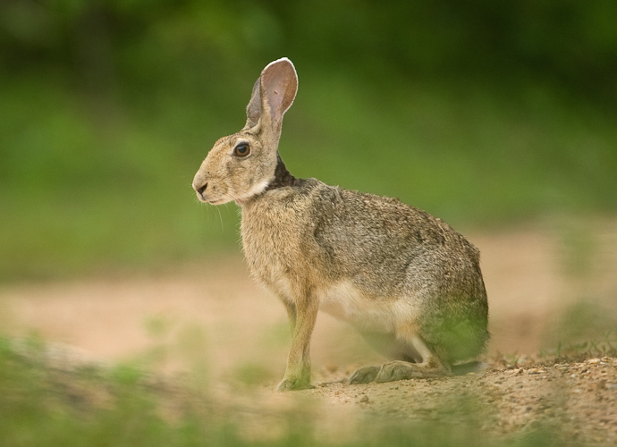
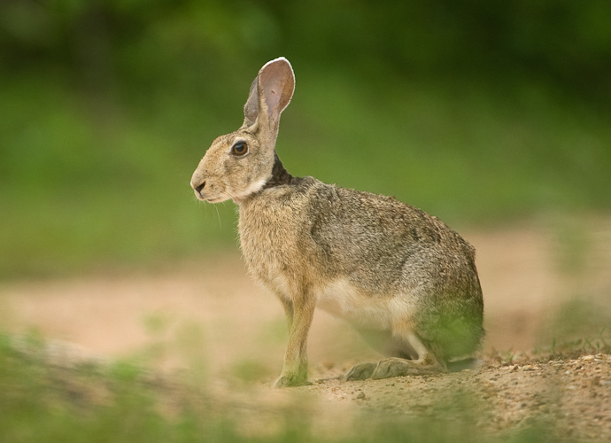

General Information
Gir National Park and Wildlife Sanctuary, also known as Sasan Gir, is a forest, national park, and wildlife sanctuary near Talala Gir in Gujarat, India. It is located 43 km (27 mi) north-east of Somnath, 65 km (40 mi) south-east of Junagadh and 60 km (37 mi) south-west of Amreli. It was established in 1965 in the erstwhile Nawab of Junagarh's private hunting area, with a total area of 1,410.30 km2 (544.52 sq mi), of which 258.71 km2 (99.89 sq mi) is fully protected as a national park and 1,151.59 km2 (444.63 sq mi) as wildlife sanctuary. It is part of the Khathiar-Gir dry deciduous forests ecoregion.
The 14th Asiatic Lion Census 2015 was conducted in May 2015. In 2015, the population was 523 (27% up compared to previous census in 2010). The population was 411 in 2010 and 359 in 2005. The lion population in Junagadh District was 268 individuals, 44 in Gir Somnath District, 174 in Amreli District, and 37 in Bhavangar District. There are 109 males, 201 females and 213 cubs.
Gir National Park is closed from 16 June to 15 October every year, throughout the monsoon season.
History
Kalesar National Park spread across 13,000 acres (53 km2) was notified on 8 December 2003 and adjacent 13,209 acres (53.45 km2) Kalesar Wildlife Sanctuary was notified on 13 December 1996. However, it is alleged, absence of sufficient funds from the Centre is proving to be a hindrance in wildlife conservation in the national park.
Geography
The Kalesar national park and wildlife sanctuary are located on both sides of Yamuna Nagar-Paonta Sahib Road in Yamuna Nagar district in Haryana, about 8 km from Hathni Kund Barrage, 15 km from Paonta sahib,[5] 55 km from Dehradun,[5] 43 km from Yamunanagar, 119 km via bitumen-paved Bilaspur road through forest or 122 km via NH 7 from Chandigarh. It is bounded by Yamuna river to the east, Rajaji National Park in Uttrakhand to the northeast, Simbalbara National Park in main Shivalik Hill range to the north on Haryana's border with Himachal Pradesh, Morni Hills and agrarian farms to the west, and agrarian farms in planes of Yamunanagar district to the south.[5]
Flora
Kalesar has 53% dense forest, 38% open forest, 9% scrub. Total forest cover is about 71%. Spread over an area of 11,570 acres (46.8 km2), Kalesar reserve forest is the only one of its kind in Haryana. Besides the tall, leafy sal trees that constitute the dense age-old forest belt of the Doon valley, there are other trees like Semul, Amaltas and Bahera. khair, shisham, sain, jhingan, chhal (Anogeissus latifolia) also found in the forest. It is the only forest in Haryana with a natural Sal tree belt. Among the flora is the small sindoor tree — it has dainty flowers, which turn into pods to produce the vermilion sindoor that adorns the tresses of married women. Climbers snake up the tree stems, and the forest floor is littered with fallen leaves and foliage plants. Sculptural anthills dot the landscape. There is a long stretch of man-made forest clearing and a 'fire line' which helps in containing forest fires.
Medicinal plants
In the jungle, there is a machaan (high observation tower) with a dangerous-looking service ladder. From top the effort is rewarded by a sweeping panorama of the 11000 acres (45 km2) of the great sal forest; criss-crossed by fire lines and meandering rivulets. About 20 km away on the Chuharpur road, is the Ch. Devi Lal Herbal Nature Park, a project of the Forests Department, Haryana. The park, spread over 50 acres (200,000 m2) with 61,000 shrubs of herbs and 6100 medicinal tree plants.
Wildlife
Khol Hi-Raitan Wildlife Sanctuary and Bir Shikargah Wildlife Sanctuary are only 3 km aerial distance from each other, both are also only few km away from Kalesar National Park, all of which lie in the Shivalik hills of Haryana. All these three sanctuaries have similar species of wild animal that migrate from one sanctuary to another.
In 2016, survey recorded Indian leopard, leopard cat, rusty-spotted cat, jungle cat, Indian jackal, Asiatic elephant, chital, sambar, barking deer, goral, nilgai, Indian crested porcupine, small Indian civet, common palm civet, gray langur, rhesus macaque, Indian gray mongoose, boar and Indian hare.
Earlier May 2004 survey in collaboration with Wildlife Institute of India found wild boars, sambhars, hares, red junglefowl, porcupine, monkeys, chitals etc.
Leopard
Further information: Leopards of Haryana and Gurugram leopard and deer safari
Indian leopard
In 2016, the annual two-month animal counting survey done by the Wildlife Institute of India using installed camera, found 19 species of mammalians including 42 Indian leopards., up from 19 in 1989 report (reported then as panthers).
Elephants
See also: Pinjore Jatayu Conservation Breeding Centre and Morni Pheasant Breeding Center
Kalesar Wildlife Sanctuary has natural population of the wild elephants. It is also home to the Ch. Surinder Singh Elephant Rehabilitation Centre (ERC) at Ban Santoor, which is a sanctuary to rehabilitate the rescued abused, exploited and sick elephants. It was set up by the Haryana Forests department in association with an NGO called Wildlife SOS, with the help of Government of India grant under the Project Elephant. ERC has elephant shelters, veterinary services, elephant husbandry and fodder service, elephant walking and exercise trails, etc. In 2015, it had 3 rescued female elephants, namely Erica, Ella and Lilly. Wild elephants also roam Kalesar and adjoining Rajaji National Park and Tiger Reserve spread across Uttrakhand and Himachal Pradesh. In January 2018, Delhi Forests department planned to rescue all the 7 domesticated elephants of Delhi kept in captivity, 2 of which will be sent to Kalesar Wildlife Sanctuary in Haryana and 4 will be sent to Rajaji National Park and Tiger Reserve in Uttrakhand.
Wildlife preservation
Eight watering holes have been dug up across the forest area to ensure that the wildlife does not stray into human habitats on its fringes in search of drinking water. Earthen dams have also been constructed to conserve rainwater for use of wildlife. Apart from this, there is proposal of Construction of 8 dams within this sanctuary area which is at the stage of Forest and wildlife clearances which is being taken care by Er. Navneet Kumar from Gaya Bihar working in Haryana Irrigation Department.
There is a plan to build a fence around the area.
Wildlife protection force and courts
As for the steps taken to ensure protection of wildlife and environment, the forest staff have been given weapons by the state government to tackle the menace posed by poachers. The state had also set up two special environmental courts in Kurukshetra and Faridabad to deal with crimes related to poaching and illicit felling of trees from the area.
Monitoring and census cameras
The Forests Department, Haryana, with funding provided by the Wildlife Institute of India, installed 80 cameras at 40 locations across the park in December 2014, primarily to monitor the movements of tigers, leopards and other animals in the park, as well as to conduct annual two-month long animal species and animal count survey.
 
